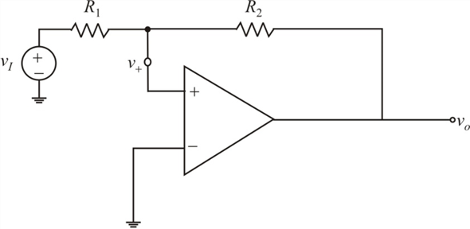

Step 1:
Draw the bistable non-inverting op-amp circuit.

Step 2:
(a)
The input is 0.5 V amplitude sine wave
When the circuit is in the positive stable state with , the positive values for  have no effect.
have no effect.
When the circuit is in the negative output state with , the negative values of  make more negative with no effect on the operation.
make more negative with no effect on the operation.
The amplitude of the input is very less, so, it is unable to change the state of the circuit, Hence, the output is at saturation levels.
Thus, the output voltage is .
Step 3:
(b)
The amplitude of 1.1 V is applied at the input.
There is change the state under the following condition:
Hence, the output is a symmetric square wave with saturation voltages, at a frequency, f and lagging with the sine wave by an angle of .
Since, , there is no change in the state when the average shift, either positive or negative swing is less than 1 V.
Thus, the output is a constant DC voltage if the shift is 0.1 V.